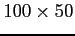

Once the x-direction length of the new device is defined, the user have, obviously, to define the number of cells in the x-direction. This is done in order to solve every equations of the simulation in the finite-difference approximation context. The bigger is the number of cells in the x-direction the best will be the accuracy in that direction (at least for the specific equations the author have implemented in this actual version of GNU Archimedes), but the user will pay the better accuracy in a more long run-time. So, pay attention in the choice of this number of cells. Usually, a grid of

is enough for the majority of devices, but it strongly depends on the device structure and the requirements of the user. To specify, for example,  cells in the x-direction, the following line have to be typed in the input file
cells in the x-direction, the following line have to be typed in the input file
XSPATIALSTEP 100